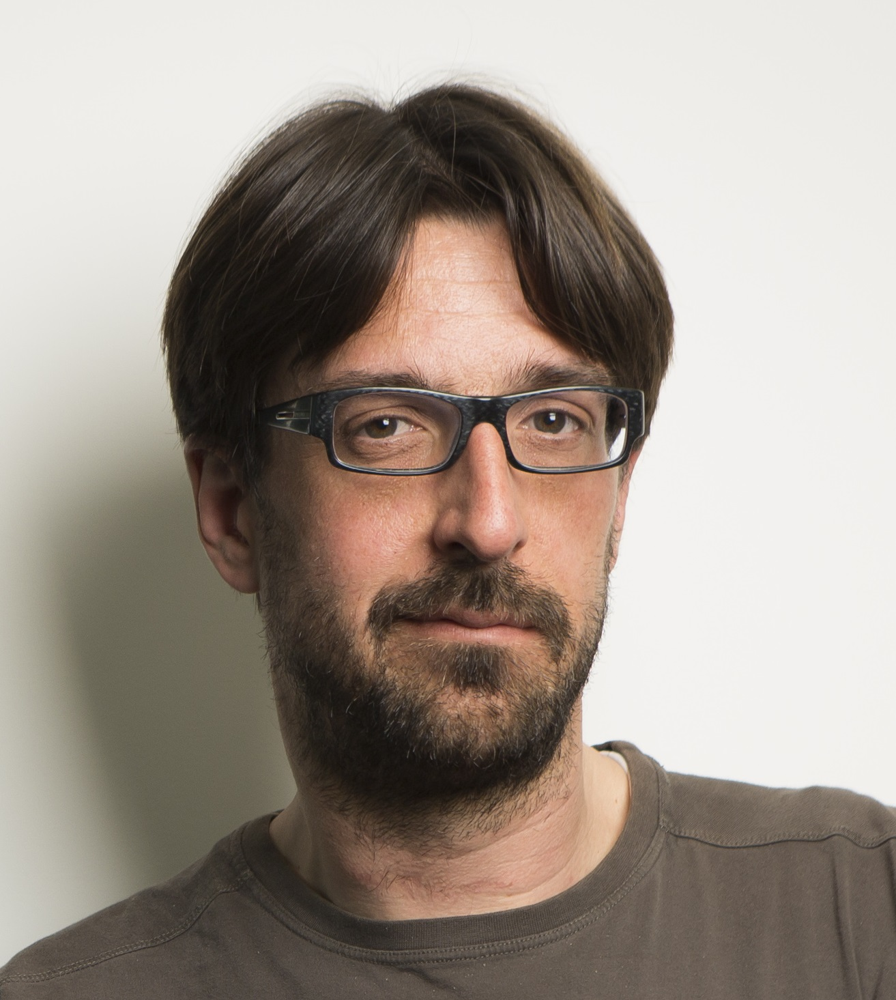

Bozidar Radunovic, Microsoft Research
Title: How to build a large, programmable 5G testbed
Abstract: In this talk, I will share our experience in building a large, enterprise 5G network testbed and making it programmable. I’ll discuss the challenges we encountered and the opportunities we uncovered along the way. These ideas have resonated widely with our industry partners, and I’ll highlight the impact this work has had with them over the past few years.
Bio: Bozidar Radunovic is a Senior Principal Researcher in the Intelligent Networked Systems group at Microsoft Research (previously Azure for Operators Research), in Cambridge, UK. His research interests are in design and building next generation 5G infrastructure on cloud and edge. He has performed research on computer systems and algorithms with particular interest in access networks, virtualization and wireless communications.